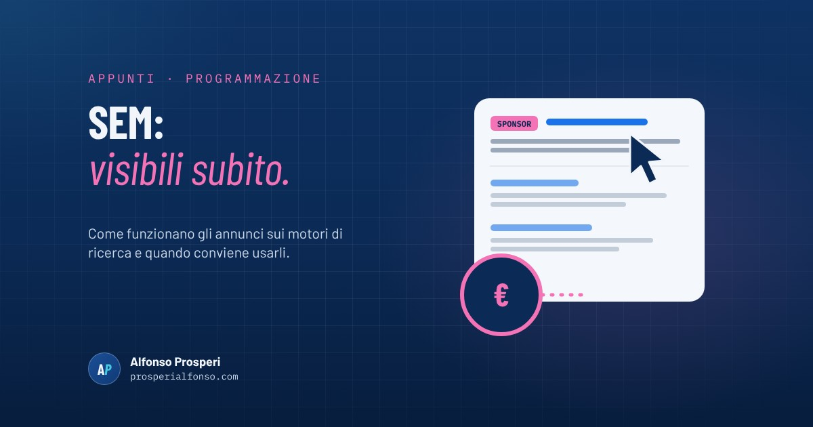

Quando cerchi qualcosa su Google, spesso i primi risultati portano la scritta "Sponsorizzato". Sono annunci pagati da chi vuole comparire in cima per quelle ricerche. È una parte della SEM, il marketing sui motori di ricerca.
SEM, SEO e SEA: facciamo ordine
- SEM (Search Engine Marketing) è il termine più ampio: tutto quello che si fa per essere visibili sui motori di ricerca.
- SEO è la parte gratuita: lavorare sul sito per comparire tra i risultati organici. Ne parlo in questo articolo.
- SEA (Search Engine Advertising) è la parte a pagamento: gli annunci. Nel linguaggio di tutti i giorni, quando si dice "fare SEM" di solito si intende proprio questo.
Come funzionano gli annunci
Lo strumento più usato è Google Ads (che fino al 2018 si chiamava AdWords). Il funzionamento di base è questo:
- scegli le parole chiave per cui vuoi comparire, per esempio "idraulico Pescara";
- scrivi l'annuncio: titolo, breve testo e link al tuo sito;
- decidi un budget giornaliero, che Google non supera nella media del mese;
- nella forma più comune paghi solo quando qualcuno clicca sull'annuncio, non quando lo vede. È il cosiddetto costo per clic (PPC, pay per click).
Il prezzo di un clic non è fisso: dipende da quante altre attività vogliono comparire per la stessa ricerca e dalla qualità dell'annuncio e della pagina a cui porta. Un annuncio pertinente, con una pagina chiara, spesso costa meno di uno generico.
SEO o annunci?
- Gli annunci portano visite da subito, si possono accendere e spegnere e misurare con precisione. Ma quando smetti di pagare, spariscono.
- La SEO richiede settimane o mesi, ma i risultati restano nel tempo e non si paga a ogni visita.
Per una piccola attività la strada più sensata è spesso usarle insieme: annunci per un periodo preciso (un'apertura, una promozione, la stagione giusta) e intanto un sito curato che cresce da solo.
Tre consigli prima di partire
- Parti piccolo. Un budget basso e poche parole chiave molto precise, poi guarda i risultati e correggi.
- Limita la zona. Se lavori in una provincia, fai vedere l'annuncio solo lì.
- Cura la pagina di arrivo. Chi clicca deve trovare subito quello che l'annuncio promette, con un modo semplice per contattarti.
E con le nuove risposte dell'intelligenza artificiale in cima ai risultati? Anche lì Google sta inserendo annunci, ma le regole e la disponibilità cambiano spesso: prima di investire conviene controllare le informazioni aggiornate nella guida di Google Ads.